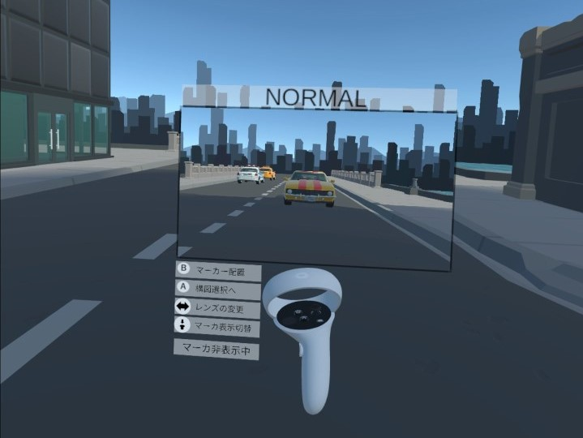

Virtual Reality空間における写真撮影練習システムの提案と評価
武藤駿嗣, 井尻敬
芝浦工業大学

概要.
本研究では，構図を考慮した写真撮影練習を手軽かつ効率的に行える環境の実現を目的とし，Virtual Realty（VR）技術を活用した写真撮影練習システムを提案する．
提案システムにおいて，ユーザはスタンドアロン型のHead Mounted Displayを装着してVR空間に入り込み，
VRコントローラをカメラとして利用しながら写真撮影を行なう．
提案システムでは，指定されたシーンや構図の撮影課題が出され，ユーザは課題に従い，写真を撮影することで構図を考慮した写真撮影を体験する．
構図を考慮した写真撮影を支援するため，提案システムは，カメラモニタ画面における構図ガイドライン表示機能や，3次元空間に構図のガイドラインとなる直線を引ける機能も提供する．提案システムの有用性を確認するためのユーザスタディを実施した．
その結果，実験後のアンケートより提案システムの各機能に対して肯定的なコメントが得られた．
Materials
[
preprint]
[
情報処理学会 ]
@techreport{weko_214611_1,
author = "武藤,駿嗣 and 井尻,敬",
title = "Virtual Reality空間における写真撮影練習システムの提案と評価",
year = "2022",
institution = "芝浦工業大学, 芝浦工業大学",
number = "33",
month = "jan"
}